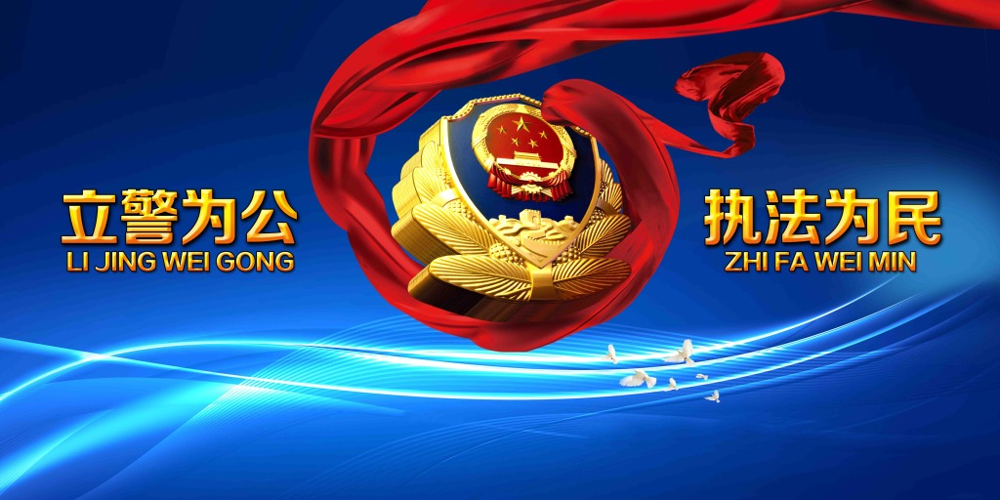

<!--
  Generated template for the CheckPage page.

  See http://ionicframework.com/docs/components/#navigation for more info on
  Ionic pages and navigation.
-->
<ion-header>

  <ion-navbar>
    <ion-title>check</ion-title>
  </ion-navbar>

</ion-header>


<ion-content padding>
  <!-- <ion-card>
    
    <div class="card-title">签到</div>
    <div class="card-subtitle">8:00之前截止</div>
  </ion-card> -->
  <ion-card>
    <ion-card-content>
      

    <!-- <ion-item>
      <button ion-button large item-start outline>
        签到
      </button>
      <button ion-button large item-end outline>
        签退
      </button>
    </ion-item> -->

    <ion-list>
      <!-- 使用ion-item把button变成一个item -->
        <button ion-item (click)="checkIn()">
          <ion-icon name="return-right" item-end></ion-icon>
          <strong>今日签到</strong>
        </button>
    
        <button ion-item (click)="checkOut()">
          <ion-icon name="return-left" item-end></ion-icon>
          <strong>今日签退</strong>
        </button>
    </ion-list>
    </ion-card-content> 
  </ion-card>
  <ion-card>
      <ion-card-header>
        管辖人员的绩效情况(点击查看详情)
      </ion-card-header>
      <ion-card-content>
        <button ion-item (click)="showEcharts()">查看绩效统计图</button>
        <ion-list>
          <button *ngFor="let follower of followers" ion-item (click)="showDetail(follower)">
            <ion-icon name="person" item-start></ion-icon>
            <h3>{{follower.empName}}</h3>
            <ion-note item-end>绩效总分：{{follower.boss}}</ion-note>
          </button>
        </ion-list>
      </ion-card-content>
    </ion-card>
</ion-content>
